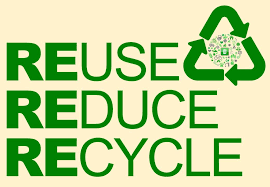
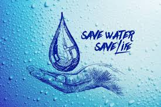
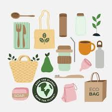

Eco-Tips for Sustainable Living
Adopting eco-friendly practices is crucial for a sustainable future. Here are some practical tips to help you reduce your environmental impact and live more sustainably.
1. Reduce, Reuse, Recycle
Follow the three R's to minimize waste. Reduce your consumption by opting for products with minimal packaging. Reuse items wherever possible, and recycle materials like paper, glass, and plastic to help reduce landfill waste.
2. Conserve Energy
Conserve energy by turning off lights and unplugging devices when not in use. Switch to energy-efficient appliances and light bulbs, and consider using renewable energy sources like solar or wind power to reduce your carbon footprint.
3. Save Water
Water is a precious resource. Fix leaks, install water-saving fixtures, and use water-efficient appliances. Collect rainwater for gardening and be mindful of your water use to help preserve this essential resource.
4. Choose Sustainable Products
Opt for products made from sustainable materials, such as bamboo or recycled materials. Support brands and companies that prioritize environmental responsibility and ethical practices in their production processes.
5. Support Local and Organic
Buying local and organic products reduces the environmental impact associated with transportation and supports sustainable farming practices. Visit farmers' markets, join a local CSA (Community Supported Agriculture), and choose organic options to support a healthier planet.